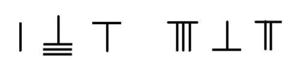

《九章算术》在《少广》篇中给出了开立方根的方法：“开立方术曰：置积为实。借一算步之，超二等。议所得，以再乘所借一算为法，而除之。除已，三之为定法。复除，折而下。以三乘所得数置中行、复借一算置下行。步之，中超一，下超二等。复置议，以一乘中，再乘下，皆副以加定法。以定法除。除已，倍下、并中从定法。复除，折下如前。开之不尽者，亦为不可开。若积有分者，通分内子为定实。定实乃开之，讫，开其母以报除。若母不可开者，又以母再乘定实，乃开之。讫，令如母而一。”
这段话极为简练，加上后人不断地誊抄，很可能有些错误和遗漏，所以读起来晦涩难懂。这里面有很多术语跟现代汉语差别太大，比如，“除”在这里是“去掉”的意思，如同楚王想“除”掉墨子，也就是“减”的意思，不是作除法。“以一乘”什么数，意思是取那个数的平方。“再乘”在“一乘”之后，意思是平方以后再乘一次，也就是三次方。至于“借算”“超（一等、二等）”等，则是“布算”中的方法。
这个算法是为算筹准备的规则，而不是公式。想象一下古人怎样用筹算解方程（1a）。他们先找一片平地或桌面，或许要先画出一些格子，然后从算袋里取出算筹，按照“商”“实”“法”“中行”“借”的规则分成五行（见附录二），每一行中的数字都用相应的算筹来表示，然后根据《九章算术》里给出的规则，像玩火柴棍游戏那样把算筹移来移去，一步步进行计算。1 860 867的算筹表示是：

图 13：1 860 867 的算筹表示。注意中间代表零的空位
请注意上式中每个数字的记数和入算都必须严格遵循位置值制，包括零，也就是空位。然后，布算者按照上面的规则，一步一步进行计算，直到得出结果。感兴趣的读者不妨看看附录二。那里给出了两千多年前中国算学家求立方根方程（1a）的详细步骤。
从原理上来看，这个开立方的算法是利用当时已知的立方二项式展开来进行的，也就是：
（a + b）3 = a3 +3 a2 b +3 ab2 +b3 （8）
在几何学上，这个表达式可以用一个立方体的分解来得到直观的解释（图14）：
（a + b）3 = a3 +3 a2 b +3 ab2 +b3
图 14：三次二项式展开的几何图解
就拿（1a）来说，1 860 867是个七位数，所以它的立方根应该是三位数，换句话说，它可以写成这种形式：a1×100 + a2×10 + a3。这里，a1、a2、a3都是介于0和9之间的整数。
为了简洁起见，令a1×100=a，a2×10+a3=b。于是，我们有（a+b）3=1 860 867=N。
根据（8），我们先估算a。这是图14中等式右边最大的立方体（a3）。现在把a3从等式（8）的右边移到左边，得到：
N-a3=3a2b+3ab2+b3=3a2(a2×10+a3)+3a(a2×10+a3)2+(a2×10+a3)3（8a）
这对应图14等式右边除了红色立方体以外其他黄、绿、蓝七块体积的总和。所以要“以三乘所得数置中行”，把所得的数乘以三放到“中行”。
确定a，也就是a1×100，比较容易。尝试几个a1，使（a1×100）3不大于N，[（a1-1）×100]3不小于100 000 000，就可以了。然后估计a2。由于a3比a小很多，可以暂时把（8a）里面所有的a3都忽略掉，所以，
N-a3≤3a2(a2×10)+3a(a2×10)2+(a2×10)3
a是已知，于是a2可以根据这个不等式估算出来。知道了a2以后，把等式（8a）右边所有不含a3的项都移到左边去，就可以求出a3了。
《九章算术》开立方术是为了解决具体问题而提出的，不是我们今天熟悉的那种直接计算出结果的公式。但一旦记住了法则，只需要简单地“复除，折而下”“复除，折下如前”等步骤，不论立方根是多少位数，反复实行上面的程序都可求出来。这其实是一个机械计算程序，它跟现代计算机程序的想法非常类似。实际上，今天仍然有不少人为了好玩儿，根据《九章算术》的开方术写出自己计算立方根的计算机程序。中国古代的算术大多是这种“应用数学”或者“计算数学”的实际操作。像墨子那样从最基本的概念开始，通过精密的逻辑来建立理论的人太少了。单从这点来看，墨子也是中国历史上的“异数”，有人甚至怀疑他是印度人。